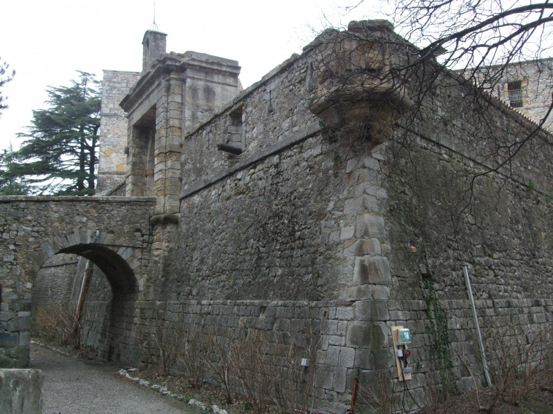
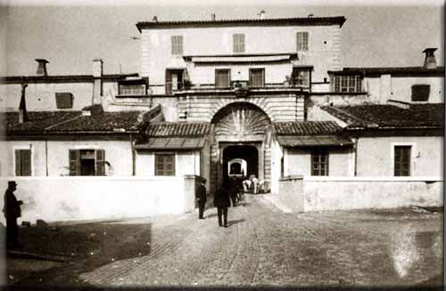
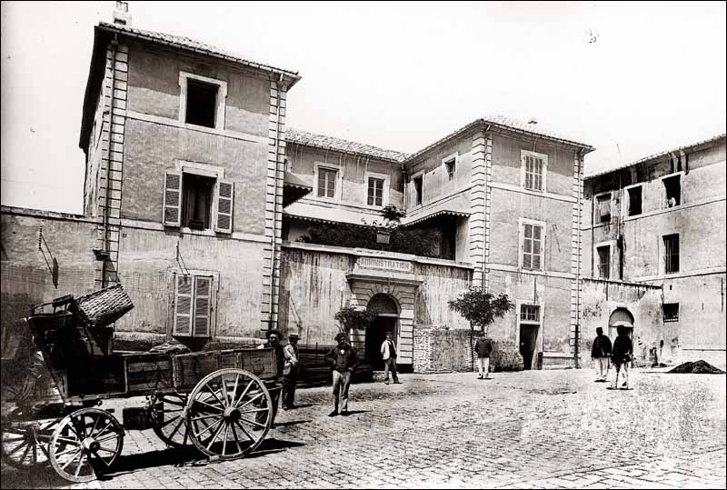
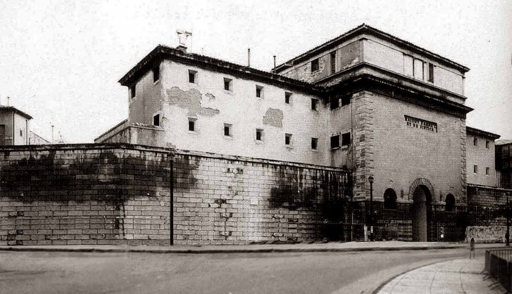
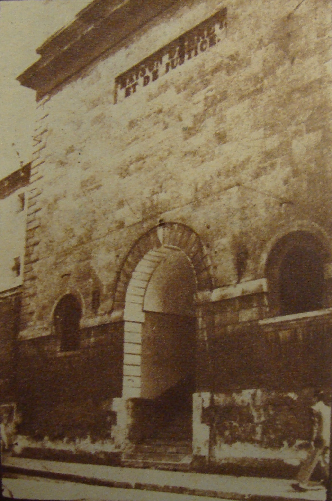
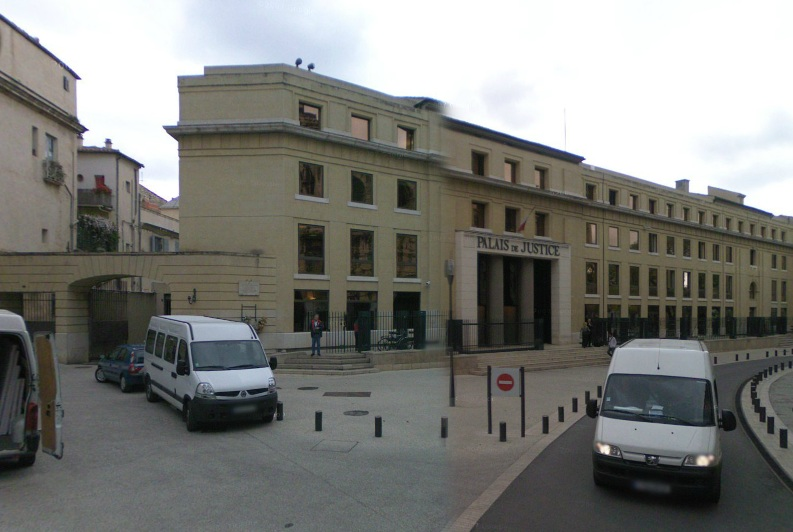
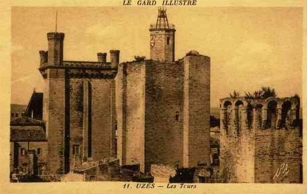
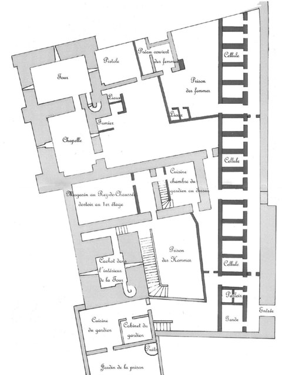

| Département | Images | Ville | Nom | Adresse | Période | Capacité | Histoire du lieu | Nombre d'exécutions |
| Gard (30) |  |
Alès | Maison d'arrêt - Fort Vauban | Place de l'Hôtel-de-Ville | 1792-1990 | 117 places, 10 surveillants (1962) | Construit en 1688. Fermé de 1926 à 1930. Fermé défintivement en juin 1990 | Aucune exécution |
| Gard (30) | Le Vigan | Maison d'arrêt | 11, rue du Palais | -1926 | Couvent des Capucins fondé en 1631, fermé durant la Révolution. Devenu siège commun du tribunal et de la prison. Depuis les années 1980, accueille la bibliothèque municipale, puis actuellement l'espace Lucie Aubrac. | Aucune exécution | ||
| Gard (30) |   |
Nîmes | Maison centrale | 1, rampe du Fort | 1820-1991 | Citadelle "Vauban" - ayant été dessinée suivant le modèle de ses forts, mais pas par le célèbre architecte lui-même - construite sur une colline, fut transformée en prison peu avant la révolution : ce fut d'abord une simple maison de correction - l'équivalent de la maison d'arrêt, c'est à dire prison pour détenus condamnés à des peines inférieures à un ans de réclusion - et également une prison militaire. Convertie en centrale le 30 mars 1820, d'une capacité moyenne de 750 détenus, elle ira jusqu'à en héberger 1250, qui travaillent dans des ateliers pour fabriquer des chaussons, des pièces de fer ou des chaises. En 1842, les surveillants sont remplacés par les frères des Écoles chrétiennes, mais retirés trois ans après, suite à l'assassinat de l'un d'eux par un prisonnier. La vie est très rude, à tel point qu'un condamné à dix ans de prison ou plus n'a guère de chances de ressortir vivant ! Il est tout aussi dangereux d'y être surveillant : de 1832 à 1875, sur 19 condamnations à mort prononcées par les assises du Gard, huit concernent des meurtres de surveillants, et cinq coupables seront guillotinés pour cela. On peut noter également qu'un certain nombre de condamnés à mort avaient, par le passé, fait un séjour à Nîmes, tel Louis Jalbaud, en 1961. En janvier 1948, suite à la présence de quatre condamnés à mort à Nîmes, on décide de modifier la liste des établissements pénitentiaires où les exécutions capitales pourront avoir lieu, car la maison d'arrêt n'a pas assez de place pour héberger autant de condamnés à mort. En attendant, on envoie les trois derniers jugés à la centrale. Début février, le condamné resté seul est supplicié à la maison d'arrêt. Le 15 avril, la loi modifiant la liste est votée, et le 27, les trois autres détenus sont exécutés dans la cour d'entrée de la centrale. Close en juin 1991, la prison fermée ne reste que peu de temps sans activité, puisque devenue l'Université Vauban, faculté des lettres de Nîmes, à compter de son inauguration, le 11 octobre 1995. | Trois exécutions en 1948. | |
| Gard (30) |    |
Nîmes | Maison d'arrêt | 1-2, boulevard des Arènes | 1826-1974 | 93 places, 23 surveillants (1962) | Bâties sur l'ancienne basilique de Plotine. | Quatre exécutions en 1940, 1943 et 1948. |
| Gard (30) |   |
Uzès | Maison d'arrêt | Impasse Port-Royal | 1792-1926 | Anciennes tours de l'Evêque et du Roi. Cellulles aménagées en 1854. Situées dans l'actuel jardin médiéval. | Aucune exécution capitale |
{kind=link}
{kind=link}
{kind=link}
{kind=link}
{kind=link}
{kind=link}
{kind=link}
{kind=link}